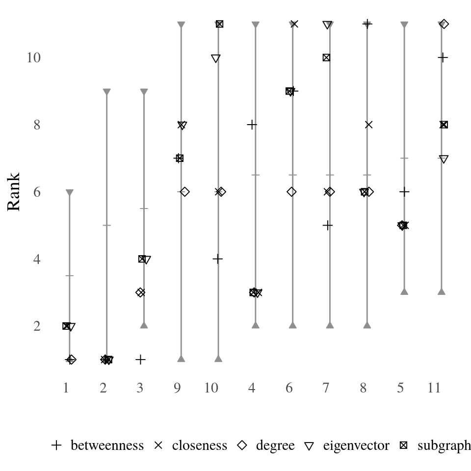

This vignette describes methods to analyse all possible centrality rankings of a network at once. To do so, a partial rankings as computed from neighborhood-inclusion or, more general, positional dominance is needed. In this vignette we focus on neighborhood-inclusion but note that all considered methods are readily applicable for positional dominance. For more examples consult the tutorial.
Neighborhood-inclusion or induces a partial ranking on the vertices of a graph \(G=(V,E)\). We write \(u\leq v\) if \(N(u)\subseteq N[v]\) holds for two vertices \(u,v \in V\). From the fact that \[
u\leq v \implies c(u) \leq c(v)
\] holds for any centrality index \(c:V\to \mathbb{R}\), we can characterize the set of all possible centrality based node rankings. Namely as the set of rankings that extend the partial ranking “\(\leq\)” to a (complete) ranking.
A node ranking can be defined as a mapping \[rk: V \to \{1,\ldots,n\},\] where we use the convention that \(u\) is the top ranked node if \(rk(u)=n\) and the bottom ranked one if \(rk(u)=1\). The set of all possible rankings can then be characterized as \[
\mathcal{R}(\leq)=\{rk:V \to \{1,\ldots,n\}\; : \; u\leq v \implies rk(u)\leq rk(v)\}.
\] This set contains all rankings that could be obtained with a centrality index.
Once \(\mathcal{R}(\leq)\) is calculated, it can be used for a probabilistic assessment of centrality, analyzing all possible rankings at once. Examples include relative rank probabilities (How likely is it, that a node \(u\) is more central than another node \(v\)?) or expected ranks (How central do we expect a node \(u\) to be).
It most be noted though, that deriving the set \(\mathcal{R}(\leq)\) quickly becomes infeasible for larger networks, and one has to resort to approximation methods. These and more theoretical details can be found in
netrankr Packagelibrary(netrankr)
library(igraph)
library(magrittr)Before calculating any probabilities consider the following example graph and the rankings induced by various centrality indices, shown as rank intervals (consult this vignette for details).
g <- graph.empty(n=11,directed = FALSE)
g <- add_edges(g,c(1,11,2,4,3,5,3,11,4,8,5,9,5,11,6,7,6,8,
6,10,6,11,7,9,7,10,7,11,8,9,8,10,9,10))
V(g)$name <- LETTERS[1:11]
#neighborhood inclusion
P <- g %>% neighborhood_inclusion()
#without %>% operator:
# P <- neighborhood_inclusion(g)
cent_scores <- data.frame(
degree=degree(g),
betweenness=round(betweenness(g),4),
closeness=round(closeness(g),4),
eigenvector=round(eigen_centrality(g)$vector,4),
subgraph=round(subgraph_centrality(g),4))
plot_rank_intervals(P,cent.df = cent_scores)
Notice how all five centrality rank a different vertex as the most central one.
In the following subsections the output of the function exact_rank_probabilities() are described which may help to circumvent the potential arbitrariness of index induced rankings. But first, let us briefly look at all the return values.
res <- exact_rank_prob(P)
str(res)## List of 7
## $ lin.ext : num 739200
## $ names : chr [1:11] "1" "2" "3" "4" ...
## $ mse : int [1:11] 1 2 3 4 5 6 7 8 9 10 ...
## $ rank.prob : num [1:11, 1:11] 0.545 0.273 0 0 0 ...
## $ relative.rank: num [1:11, 1:11] 0 0.3333 0 0.0476 0 ...
## $ expected.rank: num [1:11] 1.71 3 4.29 7.5 8.14 ...
## $ rank.spread : num [1:11] 0.958 1.897 1.725 2.54 2.16 ...The return value lin.ext gives the number of possible rankings that are in accordance with the partial ranking P. The names vector returns the names of nodes if they were supplied with the names parameter. Otherwise, node ids are returned as a character vector. The vector mse returns the equivalence classes of P. Nodes \(u\) and \(v\) are equivalent if \(N(u)\subseteq N[v]\) and \(N(v)\subseteq N[u]\) holds. The remaining return values are discussed in the following.
Instead of insisting on fixed ranks of nodes as given by indices, we can use rank probabilities to assess the likelihood of certain rank. Formally, rank probabilities are simply defined as \[
P(rk(u)=k)=\frac{\lvert \{rk \in \mathcal{R}(\leq) \; : \; rk(u)=k\} \rvert}{\lvert \mathcal{R}(\leq) \rvert}.
\] Rank probabilities are given by the return value rank.prob of the exact_rank_prob() function.
rp <- round(res$rank.prob,2)
rp## [,1] [,2] [,3] [,4] [,5] [,6] [,7] [,8] [,9] [,10] [,11]
## [1,] 0.55 0.27 0.12 0.05 0.01 0.00 0.00 0.00 0.00 0.00 0.00
## [2,] 0.27 0.22 0.17 0.13 0.09 0.06 0.04 0.02 0.01 0.00 0.00
## [3,] 0.00 0.16 0.22 0.21 0.17 0.12 0.07 0.04 0.01 0.00 0.00
## [4,] 0.00 0.03 0.05 0.07 0.09 0.11 0.12 0.13 0.13 0.14 0.14
## [5,] 0.00 0.00 0.02 0.05 0.08 0.10 0.13 0.15 0.16 0.16 0.16
## [6,] 0.00 0.05 0.08 0.10 0.11 0.11 0.11 0.11 0.11 0.11 0.11
## [7,] 0.00 0.05 0.08 0.10 0.11 0.11 0.11 0.11 0.11 0.11 0.11
## [8,] 0.00 0.03 0.05 0.07 0.09 0.11 0.12 0.13 0.13 0.14 0.14
## [9,] 0.09 0.09 0.09 0.09 0.09 0.09 0.09 0.09 0.09 0.09 0.09
## [10,] 0.09 0.09 0.09 0.09 0.09 0.09 0.09 0.09 0.09 0.09 0.09
## [11,] 0.00 0.00 0.02 0.05 0.08 0.10 0.13 0.15 0.16 0.16 0.16Entries rp[u,k] correspond to \(P(rk(u)=k)\).
The most interesting probabilities are certainly \(P(rk(u)=n)\), that is how likely is it for a node to be the most central.
rp[,11]## [1] 0.00 0.00 0.00 0.14 0.16 0.11 0.11 0.14 0.09 0.09 0.16Recall from the previous section that we found five indices that ranked \(6,7,8,10\) and \(11\) on top. The probability tell us now, how likely it is to find an index that rank these nodes on top. In this case, node \(11\) has the highest probability to be the most central node.
In some cases, we might not necessarily be interested in a complete ranking of nodes, but only in the relative position of a subset of nodes. This idea leads to relative rank probabilities, that is formally defined as \[
P(rk(u)\leq rk(v))=\frac{\lvert \{rk \in \mathcal{R}(\leq) \; : \; rk(u)\leq rk(v)\} \rvert}{\lvert \mathcal{R}(\leq) \rvert}.
\] Relative rank probabilities are given by the return value relative.rank of the exact_rank_prob() function.
rrp <- round(res$relative.rank,2)
rrp## [,1] [,2] [,3] [,4] [,5] [,6] [,7] [,8] [,9] [,10] [,11]
## [1,] 0.00 0.67 1.00 0.95 1.00 1.00 1.00 0.95 0.86 0.86 1.00
## [2,] 0.33 0.00 0.67 1.00 0.92 0.83 0.83 1.00 0.75 0.75 0.92
## [3,] 0.00 0.33 0.00 0.80 1.00 0.75 0.75 0.80 0.64 0.64 1.00
## [4,] 0.05 0.00 0.20 0.00 0.56 0.44 0.44 0.50 0.38 0.38 0.56
## [5,] 0.00 0.08 0.00 0.44 0.00 0.38 0.38 0.44 0.32 0.32 0.50
## [6,] 0.00 0.17 0.25 0.56 0.62 0.00 0.50 0.56 0.43 0.43 0.62
## [7,] 0.00 0.17 0.25 0.56 0.62 0.50 0.00 0.56 0.43 0.43 0.62
## [8,] 0.05 0.00 0.20 0.50 0.56 0.44 0.44 0.00 0.38 0.38 0.56
## [9,] 0.14 0.25 0.36 0.62 0.68 0.57 0.57 0.62 0.00 0.50 0.68
## [10,] 0.14 0.25 0.36 0.62 0.68 0.57 0.57 0.62 0.50 0.00 0.68
## [11,] 0.00 0.08 0.00 0.44 0.50 0.37 0.37 0.44 0.32 0.32 0.00Entries rrp[u,v] correspond to \(P(rk(u)\leq rk(v))\).
The more a value rrp[u,v] deviates from \(0.5\) towards \(1\), the more confidence we gain that a node \(v\) is more central than a node \(u\).
The expected rank of a node in centrality rankings is defined as the expected value of the rank probability distribution. That is, \[
\rho(u)=\sum_{k=1}^n k\cdot P(rk(u)=k).
\] Expected ranks are given by the return value expected.rank of the exact_rank_prob() function.
ex_rk <- round(res$expected.rank,2)
ex_rk## [1] 1.71 3.00 4.29 7.50 8.14 6.86 6.86 7.50 6.00 6.00 8.14As a reminder, the higher the numeric rank, the more central a node is. In this case, node \(11\) has the highest expected rank in any centrality ranking.